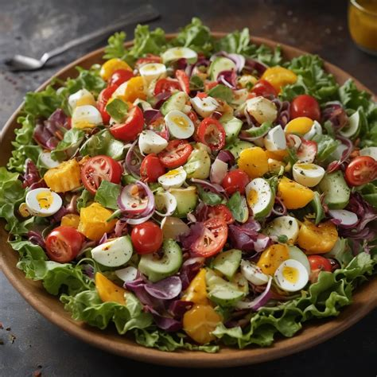

Home
Salad Recipe

Description:
This salad recipe is fresh and healthy, perfect for a light lunch or dinner.
Ingredients:
- 200g mixed salad greens
- 1 cup cherry tomatoes, halved
- 1/2 cucumber, sliced
- 1/4 red onion, thinly sliced
- 2 tbsp olive oil
- 1 tbsp balsamic vinegar
- Salt and pepper to taste
Steps:
- In a large bowl, combine mixed salad greens, cherry tomatoes, cucumber, and red onion.
- In a small bowl, whisk together olive oil, balsamic vinegar, salt, and pepper.
- Drizzle dressing over salad and toss to combine.
- Serve immediately.